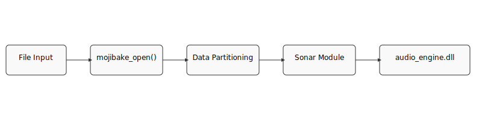
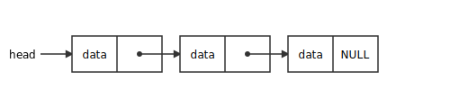

SONAR - Project Overview
Introduction
SONAR is a data analysis and visualization tool designed to inspect and transform binary files. It reads a file, divides it into partitions, and then applies various transformations to the data. The core feature is its ability to represent data as audio ("sonar"), allowing for a unique, auditory analysis of the file's contents. The project is written in C and uses the Doxygen documentation generator to create its documentation.
Data Flow Diagram
The following diagram illustrates the general data flow of the application:
Project Structure
The project is organized into several key directories:
mojibake/: Contains the core application logic.mojibake/modules/: Contains different modules for data transformation.lib/: Contains external libraries, such as the audio engine.html/,latex/,rtf/,xml/: These directories contain the output of the Doxygen documentation generation process.
Core Components
File Handling and Partitioning
The main executable, built from main.c, is responsible for parsing command-line arguments and initiating the file analysis process. The core logic for reading and partitioning files is located in mojibake.c and target.c. The mojibake_open() function reads the target file into memory, and then divides it into a series of partitions for processing.
Linked Lists
The project makes use of linked lists in its `sonar` and `dsonar` modules to manage sequences of data. These are not general-purpose linked list implementations, but rather specialized structures for handling audio samples and reconstructed data.
The following diagram illustrates the basic structure of the linked lists used in the project:
audio_sample_node_t (in mbx_sonar.h)
This linked list is used to store a sequence of audio samples generated from the input file. Each node in the list represents a single audio "note" with a specific frequency, amplitude, and duration.
reverse_sample_node_t (in mbx_dsonar.h)
This linked list is used in the reverse process, where an audio signal is analyzed to reconstruct the original data. Each node stores a detected frequency from the audio input.
From a security perspective, the use of linked lists requires careful memory management to avoid vulnerabilities such as buffer overflows, use-after-free, and memory leaks. The code responsible for allocating, manipulating, and freeing these lists should be carefully reviewed.
Sonar Module: Data to Audio
The `sonar` module is responsible for converting the raw binary data of a file into an audible representation. This process allows for a unique, auditory analysis of the file's contents. The transformation is performed by the `mbx_sonar.c` file.
The process works as follows:
- The input file is read and divided into partitions.
- For each byte in a partition, the `create_audio_sample` function is called.
- This function maps the byte's value (0-255) to a specific audio frequency. The mapping is based on a configurable frequency range.
- The function also assigns a fixed amplitude and duration to the audio sample.
- Each generated audio sample is then added as a new node to the `audio_sample_node_t` linked list.
- Finally, the entire linked list of audio samples is passed to the `audio_engine.dll`, which plays the sound.
Dsonar Module: Audio to Data
The `dsonar` module performs the reverse operation of the `sonar` module. It takes an audio signal as input and attempts to reconstruct the original binary data. This functionality is implemented in `mbx_dsonar.c`.
The process is as follows:
- The `dsonar` module uses an audio analysis library (not shown in the provided code) to detect the dominant frequencies in the input audio signal.
- Each detected frequency is stored in a `reverse_sample_node_t` linked list.
- The module then iterates through the linked list of detected frequencies.
- For each frequency, it performs a reverse mapping to determine the original byte value that would have generated that frequency.
- The reconstructed bytes are then written to an output buffer, effectively recreating the original data.
Dynamic Libraries
The project uses a dynamic-link library (DLL) for its audio engine, located at lib/audio_engine.dll. This library is responsible for taking the generated audio samples and playing them through the system's audio device.
The corresponding header file, lib/audio_engine.h, defines the interface to this library. The use of a DLL allows the audio engine to be updated or replaced independently of the main application. It's important to ensure that the application correctly handles the loading of this DLL and that the DLL itself is from a trusted source and free of vulnerabilities.
Documentation
The project uses Doxygen to generate documentation from the source code comments. The main page of the documentation is defined in MAINPAGE.md. The Doxygen configuration is stored in the Doxyfile. The generated documentation can be found in the html/ directory.